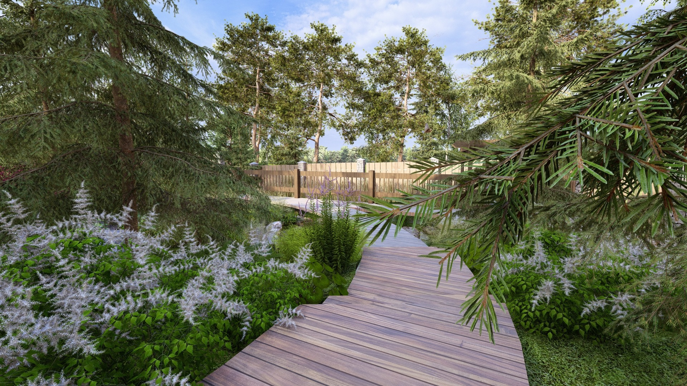
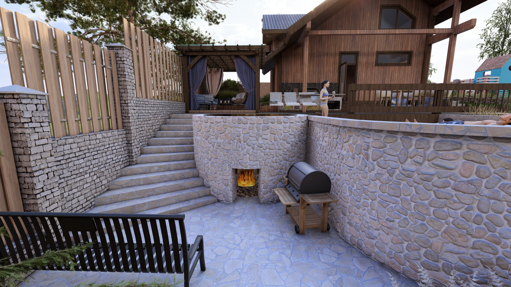
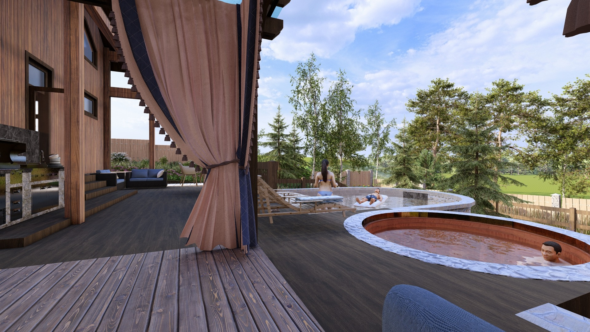
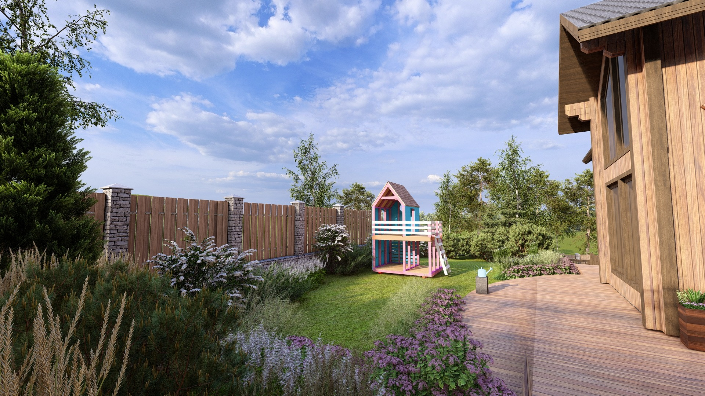
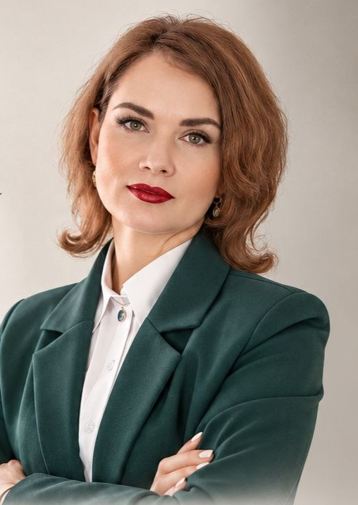

01 / Идея и образ
Концепция
+ визуализация
Планировочное решение и реалистичное представление будущего сада.
- Анализ территории и пожеланий
- Планировочная концепция
- Стилевое решение и генеральный план
- 3D-визуализации
Ландшафт, в котором природная красота становится частью повседневной жизни.

«Сад Единение» · авторская 3D-визуализация
Там, где естественный рельеф встречается с продуманными маршрутами, рождается пространство для отдыха, встреч и тихих семейных моментов.
В основе «Сада Единение» — уважение к месту, сложному рельефу и существующему природному окружению. Дорожки мягко связывают уровни сада, а растительные композиции создают ощущение естественности.

Прогулка, вода, террасы, отдых и озеленение — разные сценарии жизни, объединённые в единую композицию.




Почувствуйте масштаб, настроение и последовательность пространств. Посмотрите, как раскрывается сад во время прогулки.
Оригинальная видеопрогулка по проекту · 1 мин 41 сек
Два варианта — от разработки идеи и визуализации до комплексного проекта с рабочей документацией.
Планировочное решение и реалистичное представление будущего сада.
Комплексный проект с чертежами для согласованной организации работ.
Ландшафтный архитектор
Проектирую пространства, в которых эстетика, особенности участка и сценарии жизни семьи образуют единое целое. Для меня важны природность, пропорции, функциональность и внимание к деталям.
Обсудить в MAX ↗